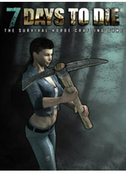

Cu peste 1,5 milioane de exemplare vândute pe PC (download digital), 7 Days to Die a redefinit genul de supravieţuire, cu crafting de neegalat şi construirea de conţinut mondial. Amplasat într-o lume post-apocaliptica, brutal ,neiertator, depaşit de strigoi, 7 Days to Die este un joc open-world, care este o combinaţie unică de first person shooter, groază de supravieţuire, turn de aparare şi jocuri de rol. Acesta prezintă lupta;, crafting, jaful, mineritul, explorare, şi creşterea caracterului, într-un mod care a văzut un raspuns răpitor din partea fanilor din întreaga lume.
Preţ : 40,70 €